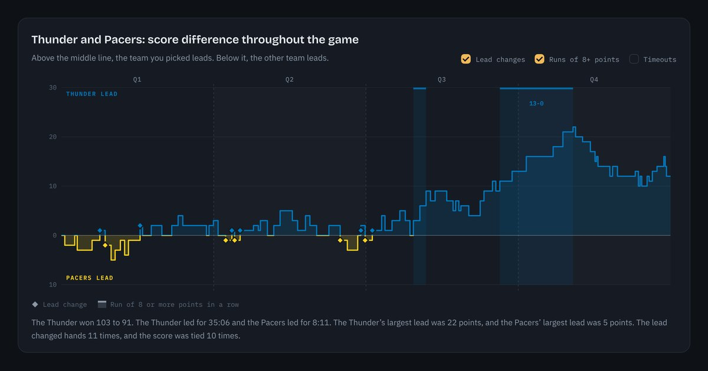

Deep dives
Data projects that go past a single chart.
Some deep dives are interactive tools you can explore. Others are write-ups that start with a question and walk through how I answered it, with the data and code included.

NBA Game Explorer
Pick any team and any 2024-25 game to see the score difference after every scoring play. Lead changes, scoring runs, and timeouts are marked, and every game's play-by-play downloads as a CSV file.
Open the explorerWhich NBA coaches stop runs?
Which coaches' teams keep giving up scoring runs, when coaches call timeout, whether their teams score right after one, and whether a timeout actually stops a run.
Where Ohio's school money goes
How Ohio's K-12 education dollars are spent, compared by school type, including community schools.
Get in touch
Have a question worth a deep dive?
If you have a data question about teaching, sports, or your community, I would be glad to hear it.